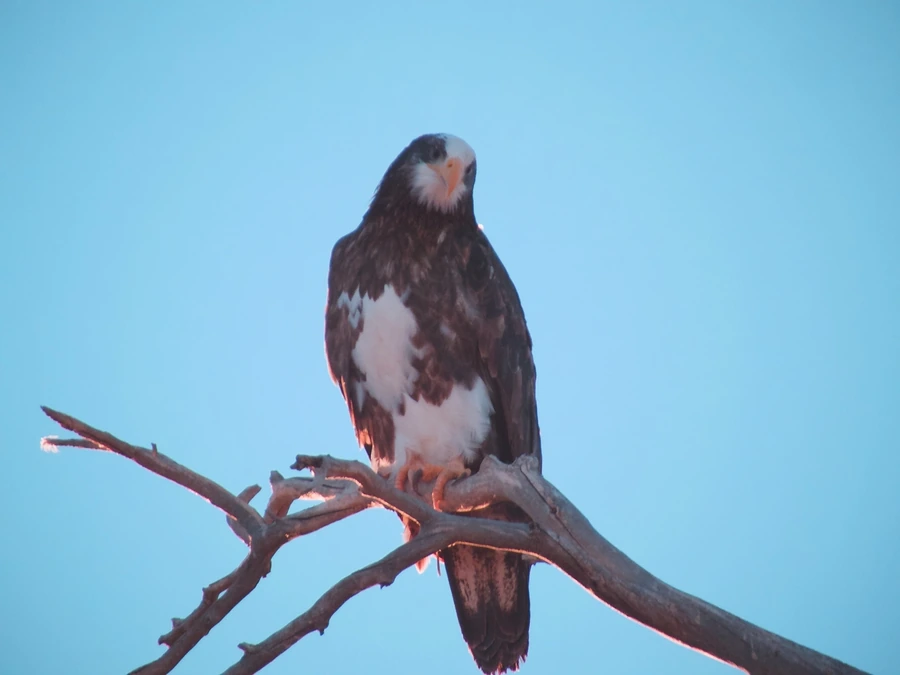

鸟类 · 动物界
白头海雕 Haliaeetus leucocephalus

北美标志性猛禽，成鸟雪白的头颈与尾羽配上深褐色身躯，是美国的国鸟，也曾因杀虫剂污染濒临消失。
- 分类
- 门脊索动物门纲鸟纲目鹰形目科鹰科属海雕属
- 栖息环境
- 北美的湖泊、河流、水库、海岸与河口，多在近水的高大乔木顶端营巢
- 地理分布
- 北美洲，从阿拉斯加、加拿大到美国本土和墨西哥北部，多沿水域分布
- 保护级别
- IUCN 无危（LC）；美国国鸟，非中国分布物种
物种志
白头海雕体长 70–102 cm，翼展 180–230 cm，体重 3–6.3 kg，雌鸟比雄鸟更大。成鸟的头颈和尾羽纯白，身体深褐色，喙、脚和虹膜为亮黄色；幼鸟全身褐色，需要 4–5 年才逐渐长出纯白的头尾。飞行时双翼平展如板，常在水面上空盘旋，发现鱼群后俯冲抓取。
白头海雕分布于北美的湖泊、河流、水库、海岸与湿地，从阿拉斯加到佛罗里达均有繁殖。它们主要以鱼为食，也捕食水鸟、小型哺乳动物并取食腐肉，还常在半空拦截鹗，逼对方扔下刚捕到的鱼。每窝产卵 1–3 枚，孵化约 34–36 天。20 世纪中叶 DDT 污染使卵壳变薄，美国本土种群一度只剩 400 多对；1972 年禁用 DDT 并加强保护后种群稳步恢复，2007 年被从美国濒危物种名录中除名。
形态与习性
- 食性鱼类为主，也吃水鸟、小型哺乳动物和腐肉
- 体长70–102 cm
- 翼展180–230 cm
- 体重3–6.3 kg，雌鸟较大
- 繁殖每窝产卵 1–3 枚，孵化约 34–36 天
- 寿命野外约 20 年，圈养可达 30 年以上
- 国鸟1782 年被美国定为国鸟
趣味知识
- 白头海雕的学名 leucocephalus 意为“白色的头”，成鸟要到 4–5 岁才长出纯白头羽。
- 20 世纪 DDT 污染使卵壳变薄，美国本土种群一度只剩 400 多对，禁用后才逐渐恢复。
- 它常在半空拦截鹗，逼对方扔下刚捕到的鱼，这种抢食行为叫“盗食寄生”。
- 白头海雕的叫声并不威武，更像一连串尖锐的哨音，影视里常用红尾鵟的叫声代替。